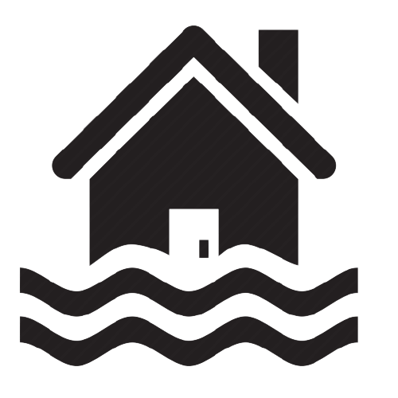

Floods 
Floods are natural incidents where a dry area or ground is usually suddenly soaked into water. The overflow of rivers, lakes, and oceans or because, in many respects, excessive rain causes flooding.
When severe precipitation occurs, people will lose lives, damage, and severe property damage. Bridges, cars, households, and even people can be brought by flooding. Flooding also destructs crops and can harm trees and other important land resources. Some of these floods take several days or even months to set up and reduce due to size, duration, and area changes. Most situations are in waves. Hurricanes, damaged waterfalls, and rain are many of the causes associated with flooding in various regions.
Until tempest waters or rivers are remediated, the areas are overloaded. These are the main reasons for flooding. Areas remain dense until excess water is dried or absorbed by the trees into the air.